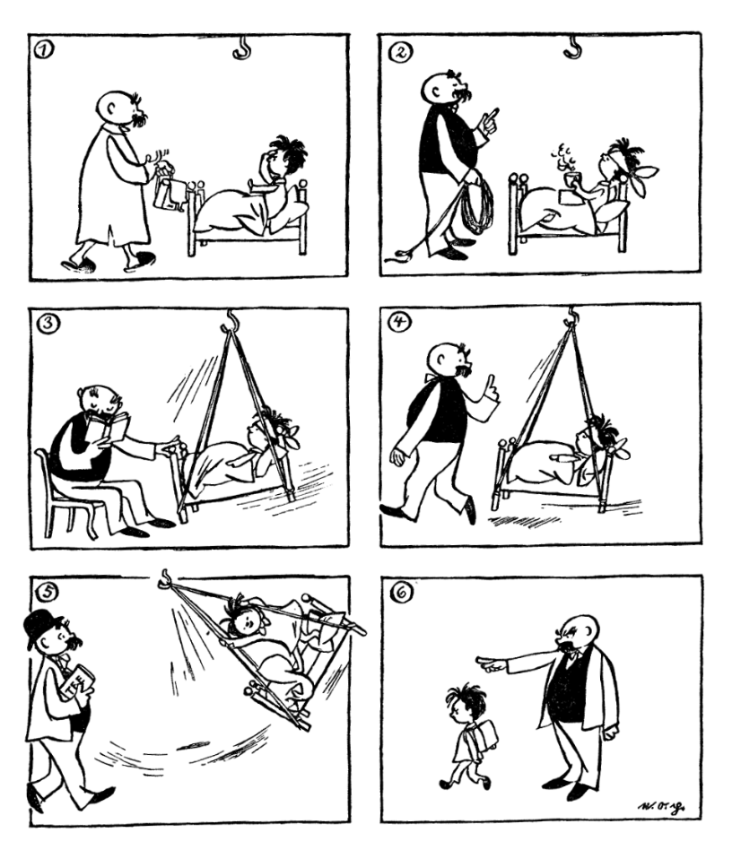

01
Bild 01
00:00 / 00:00
Betrachtet zuerst die sechs Bilder. Hört euch anschließend die Geschichte Bild für Bild an. Achtet nicht nur darauf, was ihr sehen könnt: Eine gute Bildergeschichte erzählt auch, was zwischen den einzelnen Bildern passiert.

Jede Aufnahme gehört zu einem Bild. Ihr könnt jederzeit pausieren, zehn Sekunden zurückspringen oder direkt zu einer anderen Stelle springen.
Ein Bild zeigt nur einen einzigen Moment. Eine Geschichte braucht aber auch die Ereignisse dazwischen. Überlegt gemeinsam, was zwischen zwei Bildern passiert sein könnte. Es kann mehrere gute Antworten geben.